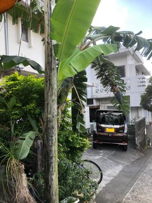
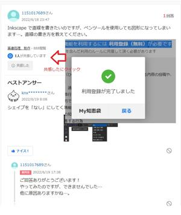

うるがいの話 ある日
最新: ヤフー知恵袋で回答できず【うるがいの話 ある日】とは 一日だけのプログです
『うるがいの話』の最新一日だけのプログで、通信料が少なく経済的だ。カニの画像をクリックすると全ての日付が載る『うるがいの話』サイトを表示します
|
|
【うるがいの話】 うるがい(ｳﾙｶﾞｲ urugai)とは、『もずくがに』の名前でとても大きくなります。 |
|---|---|
|
|
【カミマヤーの話】 猫のことを方言でマヤーといいます。カミマヤー（kamimayaa）とは、神の猫のことです。 |
|
【たながぁの音楽】 たながぁ（ﾀﾅｶﾞｰ tanagaa）とは手長えびのことで、何種類かあり大きいのは車 エビぐらいになります。 |

|
【ぶながぁの話】 ぶながぁ(ﾌﾞﾅｶﾞｰ bunagaa)とは、赤い髪の毛、赤い身体、そして身長は１ｍ２０ｃｍ ぐらい、川の蟹を食べているの目撃された。場所は沖縄県国頭郡大宜味村のと ある村僕の隣近所に住んでいる爺さんから、聞いた話です。 |
|
|
【ギーマの話】 ギーマ(giima)とは、山原の里山に咲くスズランに似た、 花を付けます。実は食べられます、 気が付くと口の周りが紫になっています。 |
2023年04月06日 (木）ヤフー知恵袋で回答できず
14:16
 
ん？？？？？、上手く行かない。ネットを調べても一時間ほど悩む、そして解
決する。よし、未解決のヤフー知恵袋で回答してあげようと、が回答は締め切
られていた。回答の準備していたのを、ここに載せることにした。
Inkscapeで直線を書きたいのですが、ペンツールを使用しても図形になってし
まいます…
Inkscapeでペンツールを使用して直線を書くが、直線が消える
2023/4/06 09:57
カラーパレットの下に、ファイル（内部の色：塗り）、
ストローク（境界線の色）がありますが
さらに、その右横にO:（不透明度％）があります
その値が恐らく0になっていると思います
100に設定してみて下さい。
私の場合は、これで対応できました。
図形ができるのは、ファイル（内部の色：塗り）に色が設定されているためで
カラーパレットの左端のある×をクイックすれば、該当なし（Ｎｏｎｅ）に設
定すれば図形（図の元になる３点以上に囲まれる箇所の塗りが、無くなるため
）は消えます。
Inkscape 数値が入力できない
2023/4/06 09:57
旧バージョンのInkscapeは、仮想環境で使用しないこと
仮想環境のwindowsで、旧バージョンのInkscapeをインスートルしたが、
Inkscape Portable数値が入力できない、半角カナ文字が表示される。
Vmware(ゲストＯＳ：windows10)やVirtualBox(ゲストＯＳ：windows8)
の仮想環境では、環境変数を設定してInkscape を起動するショートカット
を作成する手順を試したが解決しなかった。
仮想環境でないwindows10に、旧バージョンのInkscapeをインスートル、
解決した。
他に、仮想環境で旧バージョンのInkscapeを使用しているとオブジェクトの
移動や、サイズの変更（拡大縮小）も出来なかった不具合が発生したが、そ
れも解決した。
１４時００分 ビットコインの総資産 ￥１０、６９３（↓１６７）